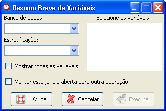

Resumo
breve
Resumo
breve
O caminho para a função é: Análises

Figura 1. Janela "Resumo breve de variáveis".
Figura 1. Janela "Resumo breve de variáveis".
O primeiro passo é selecionar o banco de dados onde está a variável que se deseja descrever. Para isso, é necessário que o banco já tenha sido aberto (detalhes sobre como abrir abrir dados ou importar dados via ODBC).
Em seguida, todas as variáveis aparecerão disponíveis na coluna "Selecione as variáveis". Deve-se então selecionar uma ou mais variáveis.
Um item opcional da janela é a variável de estratificação. Quando o banco de dados é selecionado, as variáveis identificadas como fatores aparecerão na guia "Estratificação". Se a variável de estratificação não estiver listada nesse campo, basta habilitar a opção "Mostrar todas as variáveis". É permitida a escolha de apenas uma variável para esse caso.
Após definir as opções, clique em "Executar".
Se desejar obter outras estatísticas, utilize a opção medidas sumárias seguindo o mesmo caminho: Análises
Se desejar por exemplo, a estratificação por diferentes variáveis, uma opção é habilitar o campo "Manter esta janela aberta para outra análise". Com isso, o cálculo com a variável selecionada será realizado, mas a janela da função permanecerá aberta, evitando maior demora operacional para realizar as análises.